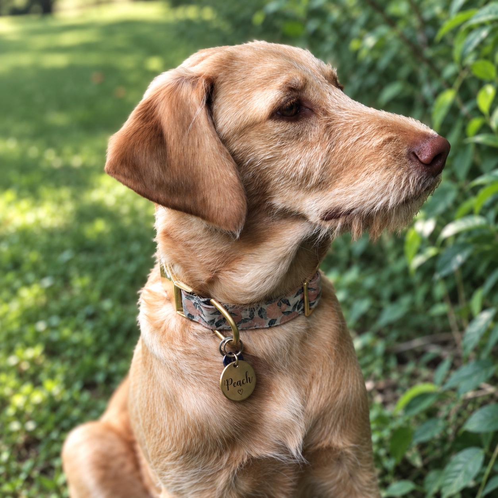

Our Story
A little handmade. A little Peach.

Meet our namesake
It started with Peach.
Sweet Peach Shop is named after our dog, Peach, the sweet face behind the name.
We make handmade polymer clay earrings, with care and a little personality in every pair.
Shop the earringsHandmade with care. Named with love.